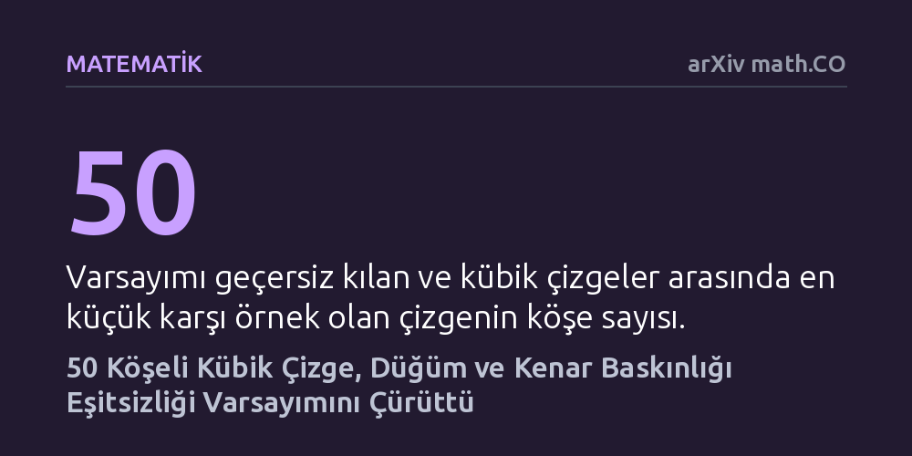

MATEMATIK · arXiv math.CO · 2026-09-12
Çalışma, düzenli çizgelerde düğüm baskınlık sayısının kenar baskınlık sayısından küçük veya eşit olduğunu öne süren matematiksel varsayımı inceledi. Araştırmacı, 50 köşeli 3-düzenli bir karşı örnek sunarak bu varsayımın yanlış olduğunu ve eşitsizliğin bu boyutta bozulduğunu ispatladı.
Düzenli ağ yapılarında geçerli olduğu varsayılan sezgisel bir sınırın evrensel olmadığını göstererek ağ tasarımı ve optimizasyon teorisindeki temel kabulleri değiştirir.

Bilgisayar ağlarından elektrik dağıtım şebekelerine kadar birçok sistem, düğümler ve onları birbirine bağlayan kenarlardan oluşan çizgeler olarak modellenir. Bu ağların güvenliğini sağlamak veya veri akışını yönetmek için en az sayıda merkez seçerek bütün ağı kapsamak temel bir matematik ve mühendislik problemidir. Bütün köşelerinden eşit sayıda bağlantı çıkan düzenli çizgeler ise ağ tasarımında simetri ve dengenin ideal modelleri olarak kabul edilir.
Çizge teorisyenleri, pozitif dereceli her sonlu düzenli çizgede düğüm baskınlık sayısının kenar baskınlık sayısından asla büyük olamayacağını öngören bir varsayım ortaya atmıştı. Bu varsayım, simetrik ağlarda düğüm denetiminin kenar denetimine kıyasla her zaman daha ekonomik veya en fazla eşit maliyetli olacağı yönünde genel bir kabul yaratmıştı.
Matematikçi Koyar Afrasyab, bu genel kabulün sınırlarını sınamak amacıyla daha önce literatürde bağımsız baskınlık eşitsizliğini çürütmekte kullanılmış 50 köşeli ve her köşesinden 3 kenar çıkan (kübik) özel bir çizgeyi incelemeye aldı. Bu çizgenin kenar baskınlık sayısının 15 olduğu kısa bir kombinatoryal sayım yöntemiyle doğrudan belirlendi.
Asıl zorlu kısım olan düğüm baskınlık sayısının en az 16 olduğunu ispatlamak için problem sonlu bir küme örtme problemine dönüştürüldü. Olası 1.048.576 durum arasından iki matematiksel alt sınır yardımıyla eleme yapıldı; geriye kalan 5.931 vaka ise özel bir yineleme bağıntısı ve standart kütüphane Python kodlarıyla çözüldü. İspatın doğruluğu ayrıca 893.049 düğümlü bir kanıt ağacı ve bağımsız çizge aramasıyla teyit edildi.
Yapılan hesaplama ve ispatlar sonucunda, söz konusu 50 köşeli çizgenin düğüm baskınlık sayısının 16, kenar baskınlık sayısının ise 15 olduğu kesinleşti. Düğüm baskınlık sayısının kenar baskınlık sayısını aşmasıyla birlikte, düzenli çizgeler için yıllardır geçerli olduğu düşünülen matematiksel varsayım tek bir somut örnekle geçersiz kılındı.
Üstelik Gupta'nın yakın tarihli bir teoremine göre, 48 ve daha az köşeye sahip bütün 3-düzenli çizgeler bu eşitsizliği sağlamaktadır. Dolayısıyla Afrasyab'ın ortaya koyduğu bu 50 köşeli çizge, söz konusu varsayımı bozan mümkün olan en küçük (minimal) 3-düzenli karşı örnek olma özelliğini taşımaktadır.
Bu çalışma, matematiksel modellemede sezgisel olarak 'genel geçer' gibi görünen kuralların dahi titizlikle test edilmesi gerektiğini hatırlatır. Düzenli ve dengeli yapılarda bile köşeleri kapsamanın maliyeti, belirli yapılandırmalarda kenarları kapsamaktan daha yüksek olabilmektedir.
Ağ optimizasyonu ve algoritma tasarımı üzerinde çalışan araştırmacılar için bu bulgu, düzenli ağlarda köşe ve kenar denetim maliyetleri arasındaki varsayılan hiyerarşinin mutlak bir kural sunmadığını ve istisnai durumlara karşı dikkatli olunması gerektiğini ortaya koymaktadır.